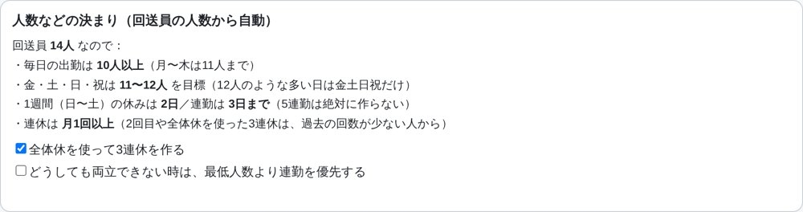
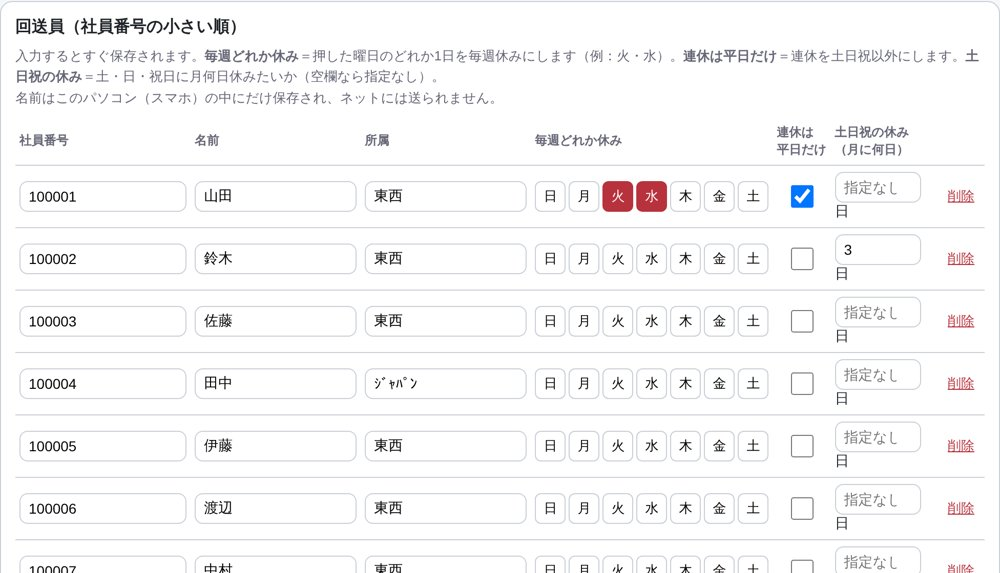
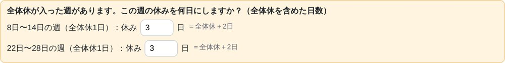
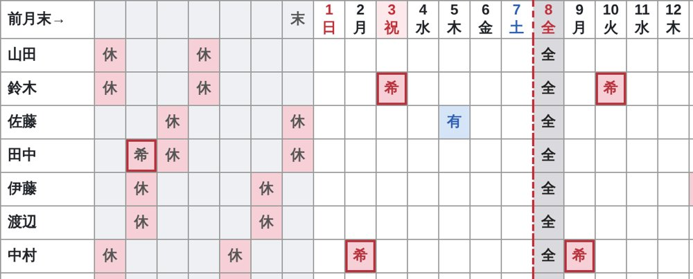
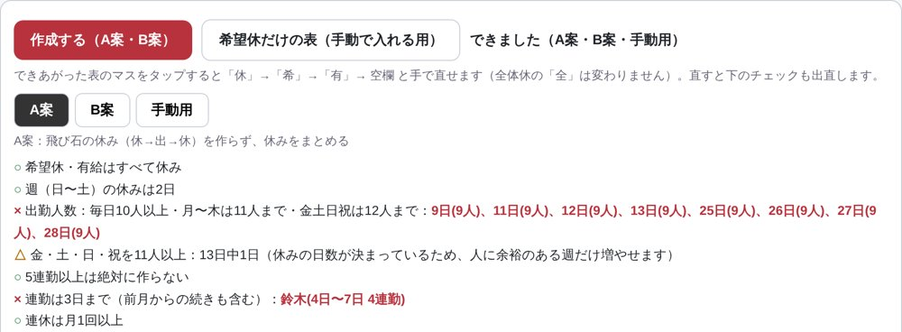
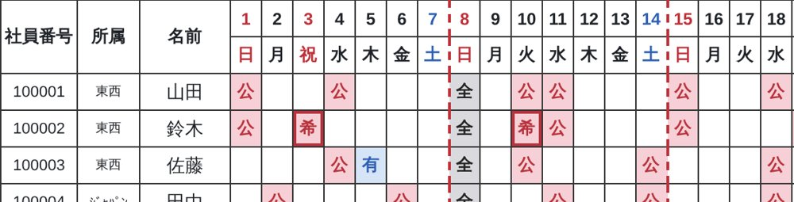
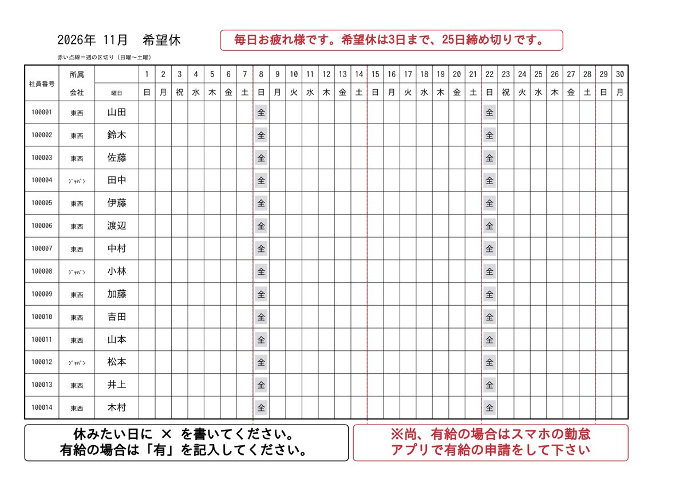

この表を印刷する
シフト自動作成ツールの使い方
ブラウザで開くだけ。AIも課金もいりません。iPhoneでもパソコン（Windows・Mac）でも使えます。
https://shige914marujyu2-afk.github.io/print-pages/shift/
スマホで
読み取ると
開きます
開き方
iPhone
：QRコードを読み取る。
共有ボタン →「ホーム画面に追加」で次からすぐ開けます。
パソコン
：Chromeで上のアドレスを開く。
Ctrl
＋
D
（Macは
⌘
＋
D
）でブックマーク。
1
条件と回送員を登録する
最初の1回だけ


「
① 条件・メンバー
」を押す
出勤人数・連勤・連休などの決まりは
人数から自動
で決まります。下のチェック2つだけ選びます
GW・お盆・年末年始
は「長い休み」に何日〜何日を入れる
「
＋ 回送員を追加
」で1人ずつ入れる。やめた人は行の「
削除
」
個人の条件
・
曜日ボタン
＝毎週そのどれかを休み
・
連休は平日だけ
のチェック
・
土日祝の休み
＝月に何日休みたいか
入力はすぐ保存され、社員番号の小さい順に並びます
2
休みを入力する
毎月


「
② 休みの入力
」で、上の「作る月」を選ぶ
一番上の
日付をタップ
：
1回目「祝」→ 2回目
全
（全体休）→ 3回目 元に戻る
マスをタップ
：
休
→
希
→
有
→ 空欄
左の灰色7列は
前月の最後の1週間
。同じようにタップして入れる（月またぎの連勤チェック用）
全体休が入った週は、オレンジの枠で
その週の休みを何日にするか
を入れる
1 / 2
3
作成して、直して、印刷する
10〜30秒


「
③ 作成・印刷
」で「
作成する（A案・B案）
」を押す
A案
＝飛び石の休みなし、
B案
＝金土日祝の出勤を多め、
手動用
＝希望休だけ。ルールを守れたかが
○
／
×
で出ます
表のマスをタップ
すると手で直せます：
公
→
希
→
有
→ 空欄（
全
は変わりません）
全部手で作るときは「
希望休だけの表（手動で入れる用）
」
決めた案で「
この表を印刷する
」→ A4横のPDFが開く
「
この案に決定
」を押すと、翌月の前月末7列が自動で入ります
4
希望休の紙を配る
毎月

「
④ 希望休の表
」を押す
「
この表を印刷する
」→ A4横のPDFが開く
名前（社員番号順）と、その月の全体休
全
が最初から入っています。集めた紙を見ながら ② で入力します
パソコンでのやり方
印刷
：「この表を印刷する」を押すと新しいタブにPDFが開き、印刷画面が出ます。プリンタを選んで「印刷」。印刷画面が出ないときは
Ctrl
＋
P
（Macは
⌘
＋
P
）
新しい版にならないとき
：
Ctrl
＋
Shift
＋
R
（Macは
⌘
＋
Shift
＋
R
）で読み込み直す
入力
：マスはクリックで切り替わります。横に長い表は
Shift
＋マウスのホイールで横に動きます
自動で守るルール（上ほど優先）
① 希望休・有給は必ず休み
④ 5連勤は絶対に作らない。4連勤もなるべく作らない
② 日曜〜土曜の1週間に休み2日
⑤ 連休は月1回以上（2回目・3連休は回数の少ない人から）
③ 毎日10人以上。月〜木は11人まで、金土日祝は11〜12人
⑥ 個人の条件（曜日・平日の連休・土日祝の休み）
困ったときは
×が消えない
：もう一度「作成する」を押すと別の組み合わせが出ます。それでも×なら、希望休の重なりなどで
どうしても守れない月
です。×の所だけタップで直してください
iPhoneで印刷
：開いたPDFの共有ボタン →「プリント」。新しい版にならないときはタブを閉じて開き直す
データの保存先
：名前や入力は
使っているパソコン・スマホの中だけ
に残ります。別の機械では①からやり直してください
2 / 2